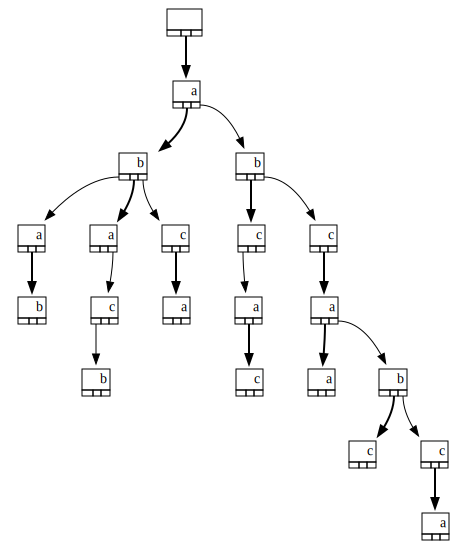

Ternary Tree Wasm
About this package
This is a simplified WebAssembly binding to my Rust ternary-tree crate.
A Ternary Search Tree (TST) is a data structure which stores key/value pairs in a tree. The key is a string, and its characters are placed in the tree nodes. Each node may have three children (hence the name): a left child, a middle child and a right child.
A search in a TST compares the current character in the key with the character of the current node:
- If both matches, the search traverses the middle child, and proceed to the next character in the key
- If the key character is less than the node one, the search simply goes through the left child, and keep looking
for the same key character - Respectively, if the key character is greater than the node one, the search simply goes through the right child
The data structure and its algorithm are explained very well in Dr.Dobb's Ternary Search Trees article.
The following tree is the TST we get after inserting the following keys in order: "aba", "ab", "bc", "ac", "abc", "a", "b", "aca", "caa", "cbc", "bac", "c", "cca", "aab", "abb", "aa".

A checked box "☑" denotes a node which stores a value (it corresponds to the last character of a key). An empty box
"☐" means that the node has no value.
A TST can be used as a map, but it allows more flexible ways to retrieve values associated with keys. This package provides four basic ways to iterate over the values of a TST:
- Apply a closure to all values stored in the tree (same as a regular map) with
tree.visit(closure, direction). See original iter doc 🦀 - Apply a closure to all values whose keys begin with some prefix (i.e. complete some prefix) with
tree.complete(prefix, closure, direction). See original iter_complete doc 🦀 - Apply a closure to all values whose keys are close to some string (Hamming distance) with
tree.neighbor(target, range, closure, direction). See original iter_neighbor doc 🦀 - Apply a closure to all values whose keys match a string with some joker (e.g. "a?c") with
tree.crossword(pattern, joker, closure, direction). See original iter_crossword doc 🦀
Quick API walkthrough
The following is an experimental mix of code, doc and basic tests, done with org-mode. It shows how to use this module API :
- clear
- complete
- count
- crossword
- get
- insert
- neighbor
- new
- pretty_print
- remove
- visit
The wasm-bindgen guide gives us the code needed to load the Wasm module without a bundler.
//Load the package from npm through Unpkg. You need init, Tst and Direction. import init, {Tst, Direction} from "https://unpkg.com/ternary-tree-wasm/ternary_tree_wasm.js"; //Use it in an async function. Do not forget to call init. async function run() { await init(); //(Pay no attention to "box" ids. They are used by Check //function to report assertion results.) let tree = CreateTree(Tst, "box1"); VisitTree(Direction, tree, "box2"); CompleteTree(Direction, tree, "box3"); NeighborTree(Direction, tree, "box4"); CrosswordTree(Direction, tree, "box5"); PrintAndClearTree(tree, "box6"); } run();
Create a tree, add, get and remove some key and value
function CreateTree(tst, id) { //Create a new empty ternary search tree. let tree = tst.new(); Check("#1 typeof(tree)", typeof(tree), "object", id); Check("#2 tree.count()", tree.count(), 0, id); let data = ["aba", "ab", "bc", "ac", "abc", "a", "b", "aca", "caa", "cbc", "bac", "c", "cca", "aab", "abb", "aa"]; //Add 'matching' key value couples in the tree by deriving 'abc' strings. for (const d of data) { tree.insert("🗝"+d, "📦"+d); } Check("#3 tree.count()", tree.count(), 16, id); //Use 'get' to retrieve the value of some key. Check("#4 tree.get('🗝abc')", tree.get('🗝abc'), "📦abc", id); //Use 'remove' to delete a key ; the value associated with the key is //returned. Check("#5 tree.remove('🗝abc')", tree.remove('🗝abc'), "📦abc", id); Check("#6 tree.count()", tree.count(), 15, id); //Request for a key that does not exist returns null. Check("#7 tree.get('🗝abc')", tree.get('🗝abc'), null, id); return tree; }
Checks
Visit keys and values
var array = []; //Create a closure that will be called for all key value pairs of the tree. var push_all_items = function (key, value) { array.push(`${key}=${value}`); }; //If seeing more key value pairs is not needed, simply returns true. var push_two_items = function (key, value) { array.push(`${key}=${value}`); let should_break = array.length >= 2; return should_break; }; function VisitTree(go, tree, id) { array = []; //Use visit to call the closure on all key value pairs. Use Forward to get //keys in alphabetical order and Backward to get them in reverse order. tree.visit(push_all_items, go.Forward); Check("#1 array", array, ["🗝a=📦a","🗝aa=📦aa","🗝aab=📦aab","🗝ab=📦ab", "🗝aba=📦aba", "🗝abb=📦abb","🗝ac=📦ac","🗝aca=📦aca","🗝b=📦b", "🗝bac=📦bac","🗝bc=📦bc", "🗝c=📦c","🗝caa=📦caa","🗝cbc=📦cbc", "🗝cca=📦cca"], id); array = []; //Get the last two items of the tree. tree.visit(push_two_items, go.Backward); Check("#2 array", array, ["🗝cca=📦cca","🗝cbc=📦cbc"], id); }
Checks
Complete keys
function CompleteTree(go, tree, id) { array = []; //Use complete with some prefix string to call the closure on all keys //beginning with this prefix. tree.complete("🗝ab", push_all_items, go.Forward); //Note that "🗝ab=📦ab" is not present because there is nothing to complete //(a prefix of some key can not be the whole key). Check("#1 array", array, ["🗝aba=📦aba", "🗝abb=📦abb"], id); }
Checks
Neighbors keys
function NeighborTree(go, tree, id) { array = []; //Use neighbor with some "target" key and a "range" to call the closure on //all keys close to the target key (think of range as the number of errors //allowed). tree.neighbor("🗝abc", 1, push_all_items, go.Forward); Check("#1 array", array, ["🗝ab=📦ab", "🗝aba=📦aba", "🗝abb=📦abb", "🗝cbc=📦cbc"], id); }
Checks
Keys with jokers
function CrosswordTree(go, tree, id) { array = []; //Use crossword with some joker in the key to call the closure on //all matching keys. You choose the joker character, and it will match //excatly one key character. tree.crossword("🗝?a?", '?', push_all_items, go.Forward); Check("#1 array", array, ["🗝aab=📦aab", "🗝bac=📦bac", "🗝caa=📦caa"], id); }
Checks
Miscellaneous, pretty_print and clear
function PrintAndClearTree(tree, id) { //Use pretty_print to generate a dot description of the tree. let tree_dot = tree.pretty_print(); //Use clear to remove all keys and values. tree.clear(); Check("#1 tree.count()", tree.count(), 0, id); }
Checks
The content of the variable tree_dot above is saved in the file tree.dot. It can be rendered to an image with the dot program which is part of the Graphviz package. For example, the command dot -T svg -o tree.svg tree.dot will produce the svg image you can see at the beginning of this page.
{kind=link}